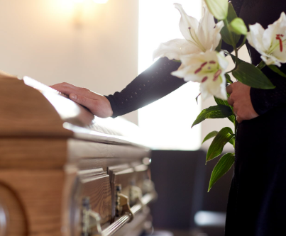
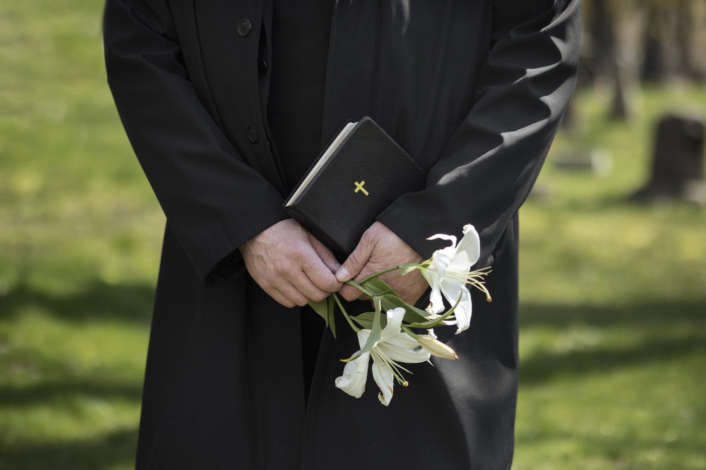

Chères familles endeuillées,
Toutes mes condoléances pour la perte de votre proche. Dans ces moments si difficiles que représente le départ d'un être aimé, ma vocation est de vous accompagner avec compassion et respect pour organiser une cérémonie funéraire digne et personnalisée.
En tant que Pasteur baptiste, j'ai à cœur de célébrer cette dernière cérémonie avec la solennité et la chaleur humaine qu'elle mérite, permettant à chacun de rendre un dernier hommage dans la foi et l'espérance chrétienne.
Les cérémonies peuvent se dérouler au cimetière, au funérarium ou au lieu choisi par la famille, selon vos souhaits et les circonstances.
Le déroulement de la cérémonie.
Votre cérémonie d'adieu se déroulera avec dignité selon un ordre spirituel éprouvé :
- Musique d'accueil pour créer un climat de recueillement
- Introduction et accueil chaleureux des personnes présentes
- Lecture biblique porteuse d'espérance
- Homélie personnalisée évoquant la vie du défunt
- Prière et moment de silence pour la méditation
- Temps de parole pour les proches (maximum quatre personnes)
- Prière de clôture et bénédiction finale
Une préparation préalable par téléphone, au presbytère de Rhode-Saint-Genèse ou par visioconférence permettra de personnaliser cette cérémonie et de me familiariser avec la vie de votre proche. Une brochure détaillant le déroulement vous sera également envoyée.
Un accompagnement complet.
Forfait Cérémonie à 350 € Cette participation inclut la préparation personnalisée (par visioconférence ou téléphone), la célébration avec dignité et l'enregistrement au Livre des Actes.
Une question ?
Pour toute demande particulière, rendez-vous sur la page de contact.
En cas d'urgence, n'hésitez pas à me contacter directement par téléphone au 0470 78 18 34.
Réserver une cérémonie
En cas d'urgence, contactez-moi directement par téléphone.